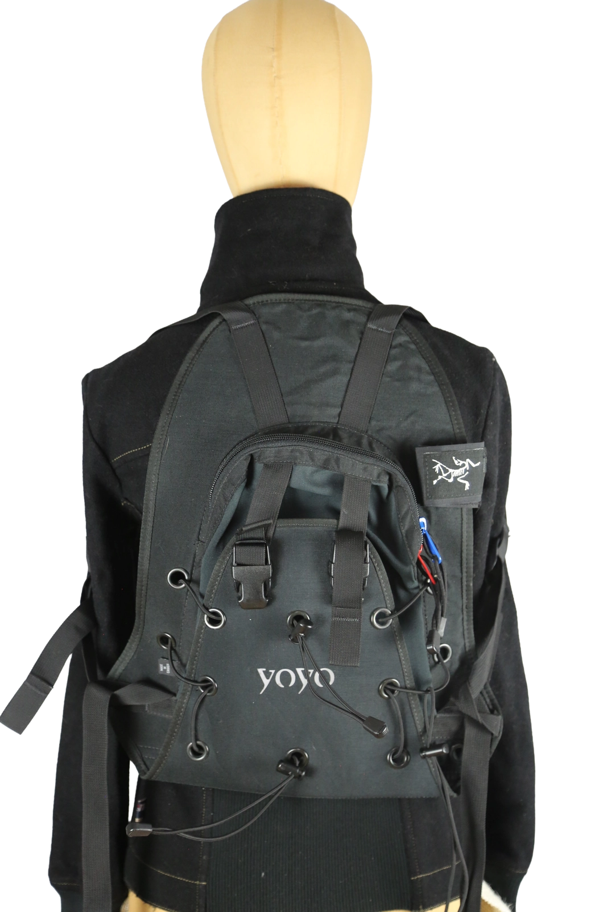

1 / 8Aus dem kuratierten Archiv von Disorder119. Kompakter technischer Rucksack aus dem Hause Arc’teryx mit klarer, funktionaler Formsprache. Der Yoyo Backpack ist auf maximale Bewegungsfreiheit und effiziente Lastverteilung ausgelegt und verbindet minimalistisches Design mit hochentwickelter Outdoor-Technik. Die strukturierte Rückenkonstruktion liegt körpernah an und wird durch verstellbare Gurte stabilisiert. Charakteristisch sind die umlaufenden Ösen mit elastischer Schnürung auf der Front, die zusätzlichen Stauraum und flexible Fixierung ermöglichen. Robuste Materialien, präzise Verarbeitung und reduzierte Linienführung machen dieses Modell zu einem zeitlosen Funktionsstück mit urbanem wie technischem Einsatzbereich. Details: Marke: Arc’teryx Modell: Yoyo Farbe: Schwarz Größe: One Size Passform: Körpernah, ergonomisch Verschluss: Reißverschluss und Steckverschlüsse Material: Technisches Gewebe Herstellungsland: Kanada Zustand: Guter gebrauchter Zustand mit leichten, altersbedingten Gebrauchsspuren. Rechtliche Hinweise: Verkauf als gebrauchtes Kleidungsstück. Die Beschreibung erfolgt nach bestem Wissen und Gewissen. Farbnuancen und Oberflächenwirkungen können aufgrund von Lichtverhältnissen bei der Fotografie sowie unterschiedlicher Bildschirmdarstellungen leicht vom Original abweichen. Disorder119 steht für sorgfältig kuratierte Designerstücke mit Fokus auf Authentizität, Qualität und zeitlose Relevanz.
Shop-Kontakt noch nicht eingerichtet: WhatsApp-Nummer oder E-Mail-Adresse fehlen in SHOP_CONFIG (index.html).
Disorder119 · Kuratiertes Archiv für Designer-, Vintage- und Contemporary-Mode. Jedes Stück wird einzeln ausgewählt, fotografiert und beschrieben.